Guía de uso para la revisión de la estadificación del sueño
Para especialistas y técnicos de sueño que confirman y corrigen, época por época, los estadios que propone el modelo.
Referencia rápida
Lo esencial en una página, para tenerla al lado mientras revisa.
El flujo
- En Registros, abra una noche «Por revisar» (o analice una nueva en Analizar nuevo).
- Pulse Iniciar revisión, arriba, junto al estado de la noche.
- Recorra las épocas marcadas: confirme el estadio del modelo o corríjalo. El visor pasa solo a la siguiente pendiente.
- Pulse Finalizar revisión: revise el resumen, deshaga lo que haga falta y finalice. La revisión queda con su nombre.
- Si hace falta, agregue notas y exporte la clasificación por época (Excel).
Teclas en la revisión
| ← → | Época anterior / siguiente |
| ⇧ + ← → | Marcada pendiente anterior / siguiente |
| A o Enter | Confirmar la 1.ª opción (el estadio del modelo) |
| B | Corregir a la 2.ª opción |
| W 1 2 3 R | Poner W, N1, N2, N3 o REM (también 0 = W y 5 = REM) |
| ⌫ | Deshacer su decisión en la época |
| Esc | Quitar el zoom de la señal o del hipnograma |
Funcionan con la revisión iniciada y fuera de los campos de texto.
Colores
Reglas y recordatorios
- Una época se marca para revisión si la confianza del modelo es menor que 0,65.
- Si el modelo marca más del límite de la noche (alrededor del 28 %), se sugiere revisarla completa.
- Cada decisión se guarda al instante: puede salir y seguir después, también desde otro computador.
- «Final» y «Solo el modelo» se ven iguales hasta que corrija una época: confirmar no cambia el estadio.
- No suba datos reales de pacientes: es un prototipo académico.
1Antes de empezar
Qué hace SomnoAI
SomnoAI toma una polisomnografía (PSG), la divide en épocas de 30 segundos y un modelo propone para cada una uno de cinco estadios —W, N1, N2, N3 y REM— con su probabilidad. Las épocas en las que el modelo no está seguro quedan marcadas para que un especialista las revise. Usted confirma o corrige, y la noche queda con un hipnograma final que lleva su nombre.
- El modelo usa hasta cuatro señales: EEG Fpz-Cz, EEG Pz-Oz, EOG horizontal y EMG submental. Siempre necesita al menos un EEG; el EOG y el EMG lo complementan.
- Aprendió de la base pública Sleep-EDF Expanded (PhysioNet), cuyos hipnogramas se anotaron con el manual de Rechtschaffen y Kales (R&K), con los estadios 3 y 4 unidos en N3.
- Cada término técnico de la aplicación tiene una explicación corta: pase el mouse sobre el botón ⓘ o tóquelo. Al final de esta guía está el glosario completo.
Ingresar
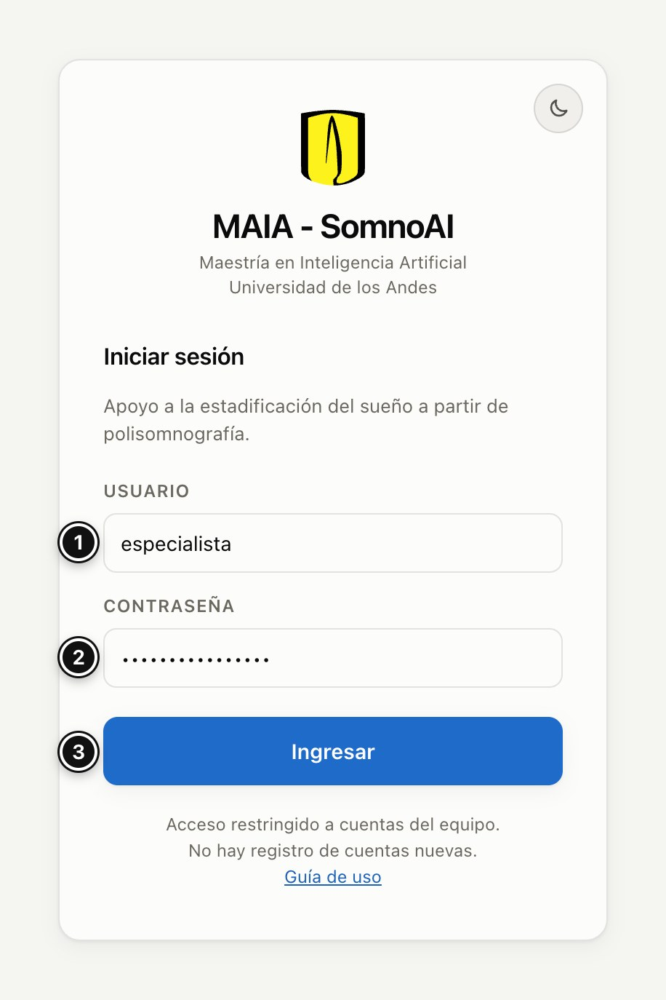
- Usuario: lo entrega el equipo del proyecto; no hay registro de cuentas nuevas.
- Contraseña: también la entrega el equipo, por un canal privado.
- Ingresar.
Arriba a la derecha de la aplicación están el botón de tema claro u oscuro, su nombre, Guía de uso (abre esta guía en otra pestaña; Volver a SomnoAI, arriba en la guía, la cierra y lo devuelve a la aplicación sin pedir la clave otra vez) y Salir. Lo que decide en la revisión queda registrado con el nombre de su cuenta.
2Registros: las noches analizadas
Es la pantalla de inicio. Muestra todas las noches analizadas por cualquier usuario y el estado de su revisión.
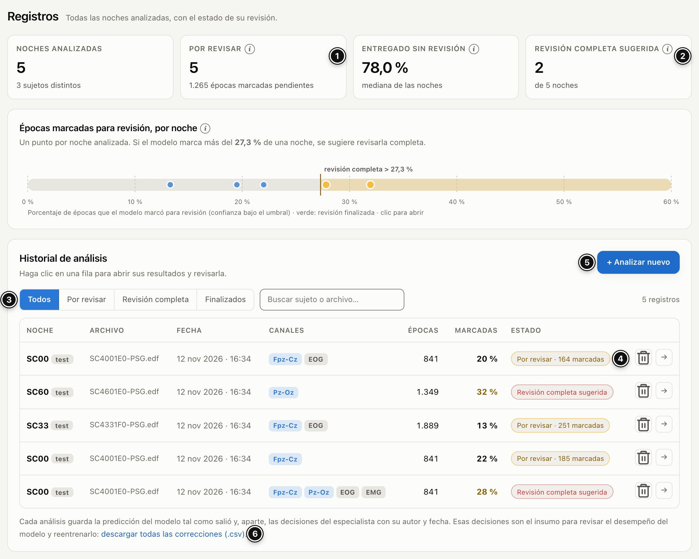
- Por revisar: noches con épocas marcadas que nadie ha revisado, y cuántas épocas marcadas siguen pendientes. Al lado, Entregado sin revisión: el porcentaje de épocas que el modelo entrega con confianza suficiente (mediana de las noches).
- Revisión completa sugerida: noches en las que el modelo dudó más de lo habitual; conviene revisarlas enteras, no solo las épocas marcadas. Debajo, el gráfico ubica cada noche según su porcentaje de épocas marcadas; la línea vertical es el límite a partir del cual se sugiere la revisión completa. Un clic en un punto abre esa noche.
- Filtros (Todos, Por revisar, Revisión completa, Finalizados) y búsqueda por sujeto o archivo.
- El estado de cada noche (tabla siguiente). Un clic en la fila abre la noche.
- + Analizar nuevo: analizar otra noche (sección 3).
- Descargar todas las correcciones (.csv): ver Exportar.
| Estado | Qué significa |
|---|---|
| En cola o el nombre de un paso | El análisis está corriendo en el servidor. |
| Falló | El análisis no terminó. Abra la noche para ver por qué y reintentarlo. |
| Por revisar · N marcadas | Listo para revisar; nadie ha empezado. |
| Revisión completa sugerida | El modelo marcó más del límite de la noche: revísela entera. |
| En revisión · N pend. | Alguien inició la revisión; quedan N épocas marcadas pendientes. |
| Finalizada | La revisión se cerró con el nombre de quien la finalizó. |
Todos los usuarios ven las mismas noches. Para no duplicar trabajo, coordine quién revisa cada una: el estado «En revisión» indica que alguien ya la empezó.
3Analizar una noche
En la pestaña Analizar nuevo (o con + Analizar nuevo en Registros) hay tres pasos: elegir la noche, revisar los canales y la ventana de análisis, y pulsar Analizar. Si alguien ya analizó la noche que va a revisar, sáltese esta sección y vaya a Leer los resultados.
3.1 Elegir una noche del catálogo
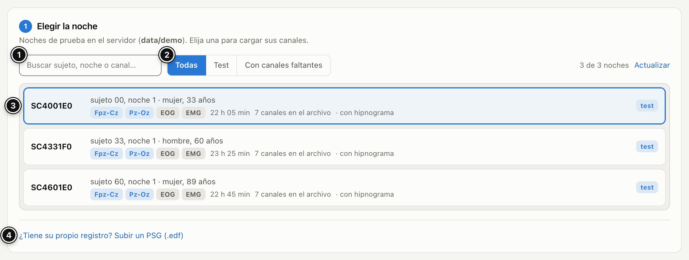
- Buscar por sujeto, noche o canal.
- Filtros: Test son noches de personas que el modelo nunca vio al entrenar; Con canales faltantes son copias de noches a las que se les quitaron algunos canales, para probar otras combinaciones.
- Cada noche muestra sujeto, sexo y edad, los canales que trae para el modelo, la duración, el total de canales del archivo y si tiene hipnograma de referencia (la estadificación hecha por un experto). Haga clic para elegirla.
- ¿Tiene su propio registro? Abre la carga de un PSG propio (3.2).
3.2 Subir su propio PSG
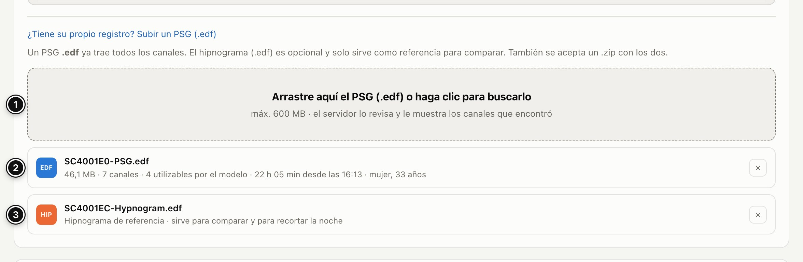
- Pulse «¿Tiene su propio registro? Subir un PSG (.edf)», debajo del catálogo, y arrastre el archivo a la zona punteada o haga clic en ella para buscarlo. Se acepta un PSG .edf (EDF o EDF+) o un .zip con el PSG y su hipnograma. Tamaño máximo: 600 MB.
- Mientras sube, una barra muestra el avance; después, el servidor revisa el archivo y le muestra lo que encontró: tamaño, cuántos canales tiene y cuántos puede usar el modelo, duración, hora de inicio y, si están en el encabezado, sexo y edad. Con × quita el archivo.
- Opcional: «+ Adjuntar el hipnograma de referencia (.edf)», un EDF+ con las anotaciones de estadios (como los *-Hypnogram.edf de Sleep-EDF). Permite recortar la noche con «Noche según el hipnograma» y medir el acuerdo del modelo con el experto. No cambia lo que predice el modelo.
Luego siga con los canales (3.3). Si el archivo no sirve, la aplicación dice por qué:
| Mensaje (resumido) | Qué hacer |
|---|---|
| «Formato no aceptado…» | Suba un .edf, o un .zip con el PSG y su hipnograma. |
| «El archivo supera el límite de 600 MB.» | Exporte el registro solo con los canales necesarios, o pida ayuda al equipo. |
| «… no es un EDF legible…» | El archivo está dañado o no es EDF: vuelva a exportarlo desde su sistema de PSG. |
| «… es solo un hipnograma…» | Suba primero el PSG y adjunte el hipnograma después, como referencia. |
| «… no tiene ninguno de los canales que usa el modelo…» o «… no tiene ningún canal de EEG…» | El modelo necesita al menos un EEG. El mensaje lista los canales del archivo: revise que el EEG esté exportado. |
3.3 Canales para el modelo
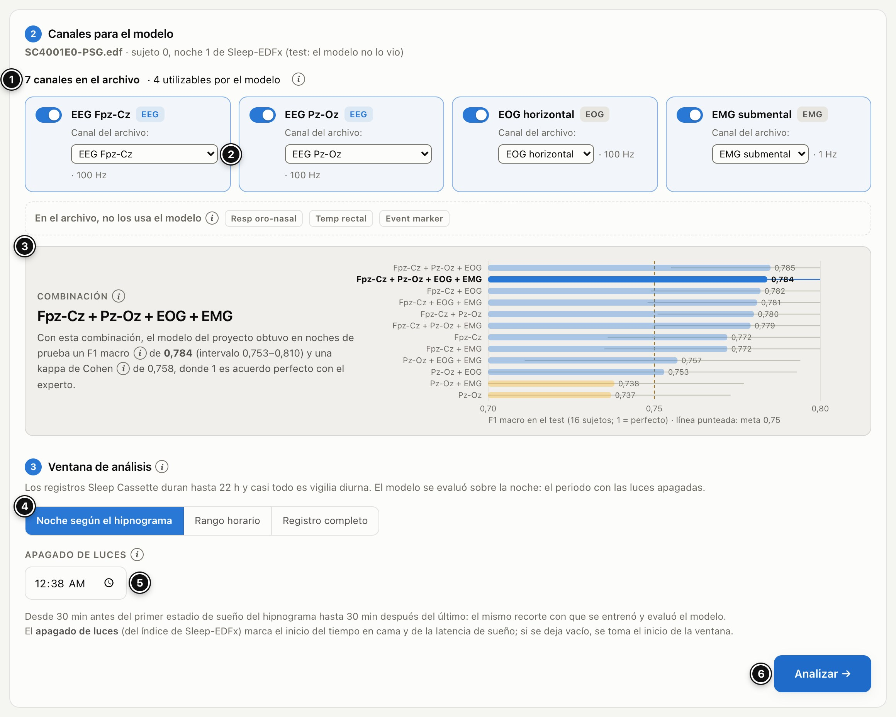
- Resumen: cuántos canales tiene el archivo y cuántos puede usar el modelo.
- Una tarjeta por cada entrada del modelo (EEG Fpz-Cz, EEG Pz-Oz, EOG horizontal, EMG submental). El interruptor la activa o la desactiva y la lista elige qué canal del archivo entra ahí. La aplicación asigna sola los que reconoce por su nombre. Si su archivo los llama distinto, elija a mano un canal del mismo tipo (por ejemplo, otra derivación de EEG): un aviso le recuerda con qué canal se entrenó el modelo. También avisa si la frecuencia de muestreo es menor de 100 Hz o si el EMG es crudo (el modelo aprendió con la envolvente del EMG a 1 Hz). Debajo, «En el archivo, no los usa el modelo» lista los demás canales (respiración, temperatura, marcadores…).
- Combinación y desempeño esperado: el acuerdo con el experto que obtuvo el modelo con esa combinación en noches de prueba (F1 macro, de 0 a 1). Las barras ámbar están bajo la meta del proyecto (0,75): con Pz-Oz sola o Pz-Oz + EMG, revise con más atención y, si el registro tiene Fpz-Cz o EOG, agréguelos.
- Ventana de análisis (3.4).
- Apagado de luces (3.4).
- Analizar →. Si está desactivado, el mensaje a su izquierda dice qué falta.
Dos reglas: siempre debe haber al menos un EEG, y un mismo canal del archivo no puede ocupar dos entradas.
3.4 Ventana de análisis y apagado de luces
- Noche según el hipnograma (±30 min): desde 30 minutos antes del primer estadio de sueño del hipnograma de referencia hasta 30 minutos después del último. Es el recorte con el que se entrenó y evaluó el modelo. Solo está disponible si hay hipnograma.
- Rango horario: usted indica Desde y Hasta. Útil si no tiene hipnograma; requiere que el archivo traiga la hora de inicio.
- Registro completo: todo el archivo. Los registros ambulatorios de Sleep-EDF duran hasta 22 horas y casi todo es vigilia diurna; para registros de más de 14 horas la aplicación propone un rango horario.
- Apagado de luces: marca el inicio del tiempo en cama y de la latencia de sueño. En las noches del catálogo viene del índice de Sleep-EDF; corríjalo si conoce la hora real. Si lo deja vacío, se toma el inicio de la ventana. La hora se muestra en 24 horas o con a. m./p. m. según la configuración de su computador.
3.5 El avance del análisis
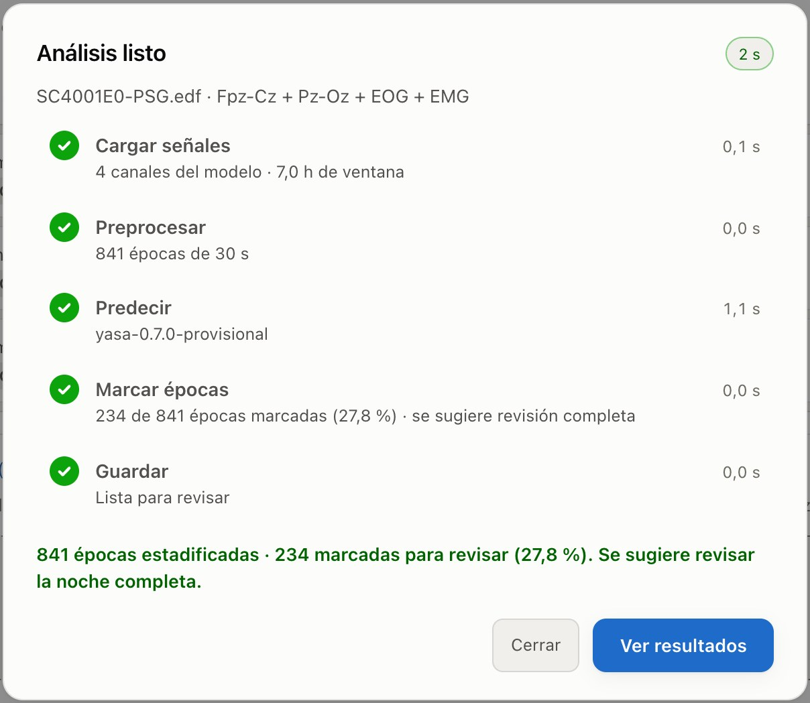
Un diálogo muestra los cinco pasos: Cargar señales, Preprocesar, Predecir, Marcar épocas y Guardar. Al terminar resume cuántas épocas se estadificaron y cuántas quedaron marcadas, y ofrece Ver resultados.
- No hace falta esperar: con Seguir en segundo plano el análisis sigue en el servidor y su estado se ve en Registros.
- Con el modelo del proyecto, si nadie lo ha usado en los últimos minutos, el paso Predecir puede tardar unos 8 minutos mientras el servicio se enciende; el diálogo lo indica.
- Si un paso falla, el diálogo dice por qué, no guarda resultados parciales y ofrece Reintentar el análisis o Cambiar la configuración.
4Leer los resultados
Al abrir una noche se ve la Vista clínica: todo lo necesario para estadificar. La pestaña Desempeño del modelo (técnico) mide el acuerdo con el hipnograma del experto y no hace falta para revisar.
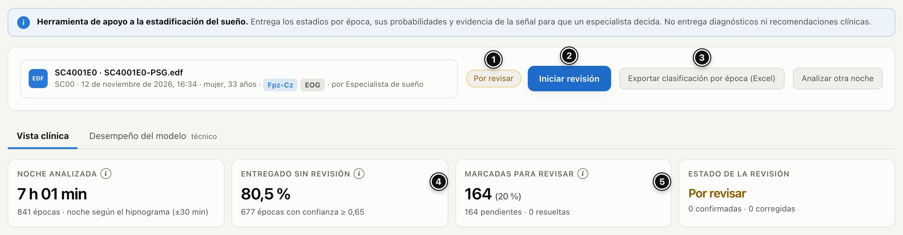
- Estado de la noche.
- La acción de la revisión, siempre en este mismo lugar: Iniciar revisión → Finalizar revisión → Reabrir revisión.
- Exportar clasificación por época (Excel). Al lado, Analizar otra noche.
- Entregado sin revisión: porcentaje de épocas con confianza de al menos 0,65.
- Marcadas para revisar: cuántas hay, cuántas siguen pendientes y cuántas ya se resolvieron.
Arriba pueden aparecer avisos: «Se sugiere revisar la noche completa» o que la combinación de canales es de las menos precisas. En ambos casos, revise con más atención (ver 5.6).
El hipnograma
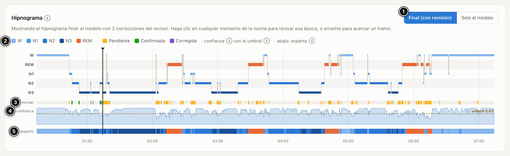
- Final (con revisión) muestra los estadios del modelo con sus correcciones encima; Solo el modelo, lo que predijo el modelo. Las dos vistas son iguales hasta que corrija alguna época: confirmar deja el estadio del modelo. La línea bajo el título dice cuántas correcciones hay.
- Leyenda: colores de los estadios y de la revisión. Al pasar el mouse sobre un elemento se resaltan esos tramos en toda la noche.
- Fila revisar: una marca por cada época marcada, con el color de su estado: pendiente, confirmada, corregida.
- Fila confianza: la probabilidad del estadio elegido a lo largo de la noche. La línea punteada es el umbral (0,65).
- Fila experto: el hipnograma de referencia, si la noche lo tiene, para comparar.
Un clic en cualquier momento de la noche abre esa época en la revisión (la línea vertical negra marca la época seleccionada). Arrastre para acercar un tramo; doble clic, Esc o «↺ Ver toda la noche» vuelven.
Arquitectura del sueño
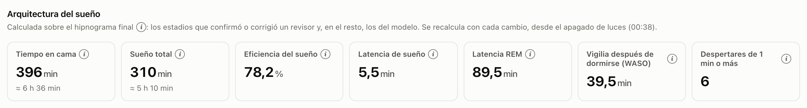
Tiempo en cama, sueño total, eficiencia, latencia de sueño, latencia REM, vigilia después de dormirse (WASO), despertares de 1 minuto o más y, debajo, minutos y porcentaje por estadio. Se calculan sobre el hipnograma final desde el apagado de luces y se recalculan con cada cambio. Las definiciones están en el glosario.
5Revisar época a época
5.1 Iniciar la revisión
Pulse Iniciar revisión (arriba, junto al estado de la noche). Hasta entonces las opciones están bloqueadas y la aplicación lo recuerda con «Inicia o reabre la revisión para editar». Desde ese momento cada decisión se guarda al instante en el servidor con su nombre, la fecha y la hora: puede salir, recargar la página o seguir otro día, también desde otro computador.
5.2 El visor de la señal
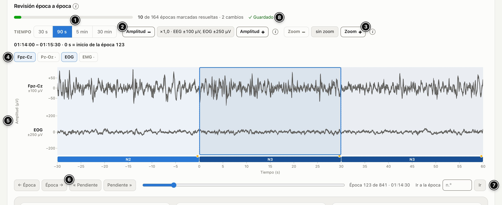
- Tiempo: 30 s (solo la época), 90 s (la época con la anterior y la siguiente; es la vista inicial), 5 min o 30 min.
- Amplitud − / +: cambia solo la altura de los trazos. Al lado se lee la escala de cada tipo de señal (con ×1, EEG ±100 µV y EOG ±250 µV). Si los picos no caben, la fila crece en vez de recortarlos.
- Zoom − / +: acerca la época a 15, 10, 5 y 2 segundos para ver de cerca un huso o un complejo K; también puede arrastrar sobre la señal para elegir el tramo. Con zoom, los botones ‹ › mueven el tramo sin cambiar la escala; «↺ Restablecer zoom», doble clic o Esc vuelven a la ventana elegida.
- Canales a la vista: muestre u oculte cada canal. Los que tienen un punto (·) están en el archivo pero el modelo no los usó en este análisis; puede mostrarlos como contexto. Siempre queda al menos uno a la vista.
- La época seleccionada va en el recuadro azul. Debajo de las señales, una franja con el estadio de cada época y un punto de color con su estado (ámbar pendiente, verde confirmada, morado corregida). El tiempo va en segundos desde el inicio de la época (0 s) y la amplitud en la unidad del archivo EDF (µV). Un clic en otra época del visor la selecciona.
- Navegar: «← Época» y «Época →» van a la vecina; «« Pendiente» y «Pendiente »» saltan entre las marcadas pendientes; el deslizador recorre la noche.
- Ir a la época: escriba el número y pulse «Ir».
- Guardado: «Cada decisión se guarda al instante» → «Guardando…» → «✓ Guardado». Encima, la barra de avance: épocas marcadas resueltas y cambios.
5.3 Decidir: confirmar o corregir
Debajo del visor están los datos de la época seleccionada y las opciones para decidir.
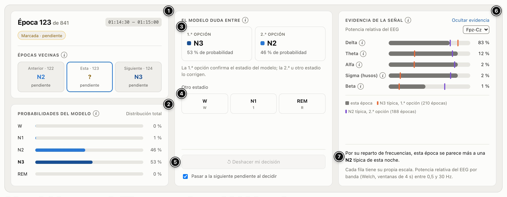
- La época: número, hora y estado, y sus épocas vecinas (anterior y siguiente) con su estadio y de dónde viene (del modelo, pendiente, o confirmada o corregida por quién). Un clic en una vecina la abre.
- Probabilidades del modelo para los cinco estadios.
- Las dos opciones más probables. La 1.ª opción es el estadio del modelo: elegirla lo confirma (A o Enter). La 2.ª opción lo corrige a ese estadio (B). Cuando el modelo duda, el estadio correcto suele ser uno de los dos.
- Otro estadio: corrige a cualquiera de los otros tres (o con W 1 2 3 R).
- ↺ Deshacer mi decisión (⌫): la época vuelve al estadio del modelo y, si estaba marcada, a pendiente. La casilla «Pasar a la siguiente pendiente al decidir» viene activada; desactívela si prefiere quedarse en la época después de decidir.
- Evidencia de la señal (5.4).
- El resumen de la evidencia: a qué estadio típico de esta noche se parece la época.
Estados de la época: Marcada · pendiente ✓ Confirmada Corregida: N2 → N3 No requiere revisión · confianza 92 %. Las épocas que no están marcadas también se pueden corregir si lo considera necesario. Si se equivoca, elija el estadio correcto: vale la última decisión.
5.4 Cómo leer la evidencia de la señal
Muestra cómo se reparte la potencia del EEG por bandas de frecuencia en la época (barra gris) y la compara con la época típica de cada una de las dos opciones en esta misma noche (marca naranja: 1.ª opción; marca morada: 2.ª opción). La época típica de un estadio es la mediana de las épocas de ese estadio que el modelo entregó con confianza o que ya decidió un revisor. Si la noche tiene dos EEG, la lista de arriba a la derecha elige cuál usar.
| Banda | Frecuencias | Qué suele indicar |
|---|---|---|
| Delta | 0,5–4 Hz | Ondas lentas; predominan en N3. |
| Theta | 4–8 Hz | Actividad típica de N1 y de REM. |
| Alfa | 8–12 Hz | Vigilia relajada con los ojos cerrados. |
| Sigma (husos) | 12–15 Hz | Husos de sueño, típicos de N2. |
| Beta | 15–30 Hz | Vigilia activa y microdespertares. |
Cada fila tiene su propia escala: compare la barra gris con las marcas de su misma fila, no entre filas.
5.5 La lista de épocas para revisar
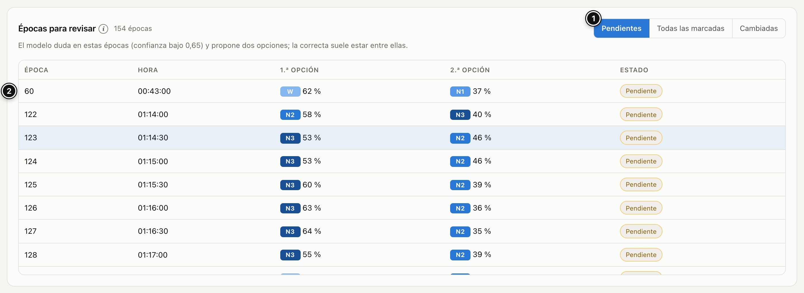
- Pendientes (marcadas sin decidir), Todas las marcadas o Cambiadas (las que se corrigieron).
- Cada fila: época, hora, 1.ª y 2.ª opción con su probabilidad, y estado. Un clic la abre en el visor.
5.6 Cuando se sugiere la revisión completa
Si el modelo marcó más del límite de la noche (cerca del 28 %; el valor exacto aparece en Registros), duda más de lo habitual en ese registro: revise toda la noche, no solo las épocas marcadas. Recórrala con ← →: en una época no marcada, A o Enter la confirman y pasan a la siguiente. Haga lo mismo cuando la combinación de canales sea de las menos precisas.
6Finalizar, notas y bitácora
Finalizar la revisión
Pulse Finalizar revisión, en el mismo lugar donde la inició. Antes de cerrar se abre un resumen:
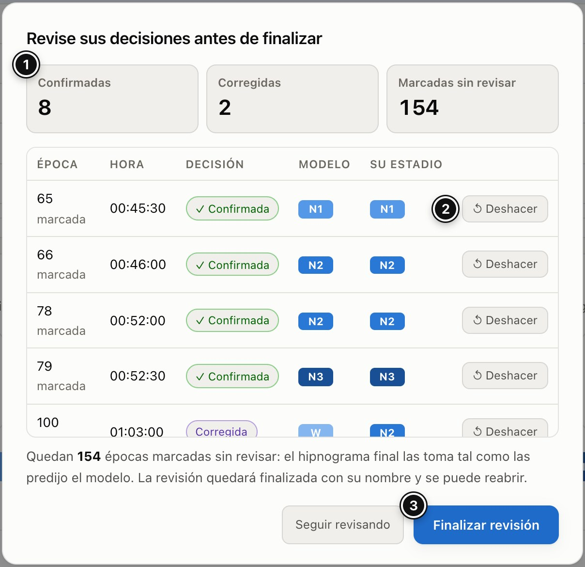
- Cuántas épocas confirmó, cuántas corrigió y cuántas marcadas quedan sin revisar.
- La lista de sus decisiones (época, hora, decisión, estadio del modelo y su estadio), cada una con ↺ Deshacer.
- Finalizar revisión la cierra con su nombre, la fecha y la hora. Seguir revisando vuelve sin cerrar.
Si quedan épocas marcadas sin revisar, el hipnograma final las toma tal como las predijo el modelo; el resumen lo advierte. Una revisión finalizada se puede volver a abrir con Reabrir revisión, que pide confirmación y queda en la bitácora.
Notas del técnico
En Notas del técnico, debajo de la arquitectura del sueño, escriba observaciones sobre la noche (artefactos, eventos, contexto) y pulse Guardar nota (o Ctrl/⌘ + Enter). Cada nota queda con su nombre y la fecha, y también en la bitácora. La aplicación no genera recomendaciones.
Detalles del análisis y bitácora
Detalles del análisis muestra qué noche se analizó, qué parte (ventana, épocas, apagado de luces), con qué canales y con qué modelo (versión y umbral). La bitácora registra cada cambio: quién, cuándo, qué hizo, el valor anterior y el nuevo. No se puede borrar.
7Exportar
La clasificación de una noche (Excel)
En los resultados, Exportar clasificación por época (Excel) descarga una fila por época:
| Columna | Contenido |
|---|---|
| epoca · hora · inicio_s | Número de época, hora del reloj y segundos desde el inicio del registro. |
| prediccion · confianza · segunda_opcion | Estadio del modelo, su probabilidad y la 2.ª opción. |
| p_W · p_N1 · p_N2 · p_N3 · p_REM | Probabilidad de cada estadio. |
| marcada_revisar | 1 si la época quedó marcada para revisión. |
| estadio_final · revision · revisado_por | El estadio del hipnograma final, el resultado de la revisión (confirmada, corregida o pendiente) y quién decidió. |
| referencia | El estadio del experto, si la noche tiene hipnograma de referencia. |
Todas las correcciones (CSV)
En Registros, el enlace descargar todas las correcciones (.csv) reúne cada época que un especialista confirmó o corrigió, de todas las noches, con su autor y fecha. Es el insumo del equipo para medir el modelo en uso y reentrenarlo. Si al abrirlo en Excel las tildes se ven mal, impórtelo con Datos › Desde el texto/CSV y elija la codificación UTF-8.
8Problemas frecuentes
No veo diferencia entre «Final» y «Solo el modelo».
Es normal mientras no haya correcciones: confirmar una época deja el estadio del modelo. Cuando corrija una época, «Final» la mostrará con su nuevo estadio.
Los botones de estadio no responden, o aparece «Inicia o reabre la revisión para editar».
La revisión no está iniciada o ya se finalizó. Use Iniciar revisión o Reabrir revisión, arriba.
Las teclas no hacen nada.
Haga clic fuera de los campos de texto (la nota o «Ir a la época») y cierre cualquier diálogo abierto. Las teclas solo funcionan con la revisión iniciada.
¿Qué significan los colores en la fila «revisar» del hipnograma?
Ámbar: marcada y pendiente. Verde: usted confirmó el estadio del modelo. Morado: usted lo corrigió.
Me equivoqué en una época.
Elija el estadio correcto (vale la última decisión) o deshaga la decisión: en la revisión con «↺ Deshacer mi decisión» o ⌫, o en el resumen antes de finalizar con «↺ Deshacer».
Aparece «⚠ El último cambio no se guardó».
Se perdió la conexión con el servidor y esa época quedó como estaba. Revise su conexión y vuelva a decidirla. Las decisiones anteriores ya están guardadas; si el aviso se repite, recargue la página.
Quiero seguir otro día o en otro computador.
Cada decisión ya está guardada. Abra la noche desde Registros (estado «En revisión») y continúe; con ⇧ + → va a la siguiente pendiente.
El análisis falló.
El diálogo (o la noche abierta desde Registros) dice en qué paso y por qué. Pulse Reintentar el análisis. Si falla en Predecir, puede que el servicio del modelo esté apagado: reintente más tarde o avise al equipo. Con Cambiar la configuración puede elegir otros canales u otra ventana.
El paso «Predecir» tarda mucho.
Si el modelo del proyecto no se había usado en los últimos minutos, tarda unos 8 minutos en encenderse. Puede cerrar el diálogo con «Seguir en segundo plano» y volver luego desde Registros.
Subí mi archivo y dice que no tiene EEG o que no tiene los canales del modelo.
Vea la tabla de mensajes en 3.2. Si el EEG tiene otro nombre, asígnelo a mano en el paso de canales.
La época del Excel no coincide con la de la pantalla.
En el archivo las épocas se numeran desde 0: la época n de la pantalla es la fila con epoca = n − 1.
Borré una noche por error.
No se puede recuperar desde la aplicación. Avise al equipo: el servidor guarda una copia diaria de la base de datos.
9Glosario
Las mismas explicaciones de los botones ⓘ de la aplicación.
- Época
- Fragmento de 30 segundos del registro; a cada época se le asigna un estadio de sueño.
- Hipnograma
- Gráfico del estadio de sueño (W, N1, N2, N3, REM) a lo largo de la noche, época por época.
- Hipnograma final
- Los estadios del modelo con las decisiones del revisor encima: donde un especialista confirmó o corrigió, manda su decisión.
- Hipnograma de referencia
- Estadificación hecha a mano por un experto para la misma noche. Sirve para medir cuánto acierta el modelo.
- Confianza
- Probabilidad que el modelo le da al estadio que eligió: cuanto más alta, más seguro está.
- Umbral de confianza
- Si la confianza de una época queda por debajo de 0,65, la época se marca para que un especialista la revise.
- Épocas marcadas
- Épocas en las que el modelo no está seguro (confianza bajo 0,65) y que conviene que revise un especialista.
- Por revisar
- Noches analizadas con épocas marcadas que nadie ha revisado todavía.
- Revisión completa sugerida
- Si el modelo marca más del límite de la noche (cerca del 28 %), se recomienda revisarla entera y no solo las épocas marcadas.
- Entregado sin revisión
- Porcentaje de épocas en que el modelo superó el umbral de confianza y que se pueden entregar sin revisión.
- Dos opciones más probables
- Los dos estadios a los que el modelo les da más probabilidad en la época; cuando duda, el correcto suele ser uno de ellos.
- Épocas vecinas
- Estadio de la época anterior y de la siguiente: ayuda a juzgar si la transición tiene sentido.
- Evidencia de la señal
- Cómo se reparte la potencia del EEG por bandas de frecuencia en la época, comparada con las épocas típicas de cada estadio en la misma noche.
- Ventana de análisis
- Parte del registro que se envía al modelo: normalmente la noche, con las luces apagadas, sin la vigilia diurna.
- Apagado de luces
- Hora en que se apagaron las luces. Marca el inicio del tiempo en cama y de la latencia de sueño.
- Combinación de canales
- Las señales que recibe el modelo. Siempre lleva al menos un EEG; el EOG y el EMG lo complementan.
- Noche del test
- Noche de una persona que el modelo nunca vio al entrenar: mide su desempeño real.
- Noche con canales faltantes
- Copia de una noche de prueba a la que se le quitaron algunos canales del modelo, para ver cómo funciona sin todas las señales.
- Tiempo en cama (TIB)
- Desde el apagado de luces (o el inicio de la ventana) hasta el final de la ventana analizada.
- Sueño total (TST)
- Minutos en N1, N2, N3 o REM dentro del tiempo en cama.
- Eficiencia del sueño
- Sueño total dividido por el tiempo en cama.
- Latencia de sueño
- Minutos desde el apagado de luces hasta la primera época de sueño.
- Latencia REM
- Minutos desde que se durmió hasta la primera época de REM.
- Vigilia después de dormirse (WASO)
- Minutos despierto entre la primera y la última época de sueño.
- Despertares
- Veces que la persona estuvo despierta al menos 1 minuto seguido después de dormirse.
- Porcentaje por estadio
- N1, N2, N3 y REM como porcentaje del sueño total; la vigilia, como porcentaje del tiempo en cama.
- Desempeño esperado
- Lo que obtuvo el modelo del proyecto con una combinación de canales en noches de prueba que nunca vio al entrenar.
- F1 macro
- Promedio del acierto (F1) en los cinco estadios, de 0 a 1: les da el mismo peso a los estadios frecuentes y a los raros.
- Kappa de Cohen
- Acuerdo entre el modelo y el experto descontando el que se daría por azar: 1 es acuerdo perfecto y 0, azar.
- Versión del modelo
- Qué versión del modelo estadificó la noche. Queda guardada con la noche aunque el modelo cambie.
- Bitácora
- Registro de cada cambio: quién, cuándo, qué hizo y el valor anterior y el nuevo. No se puede borrar.